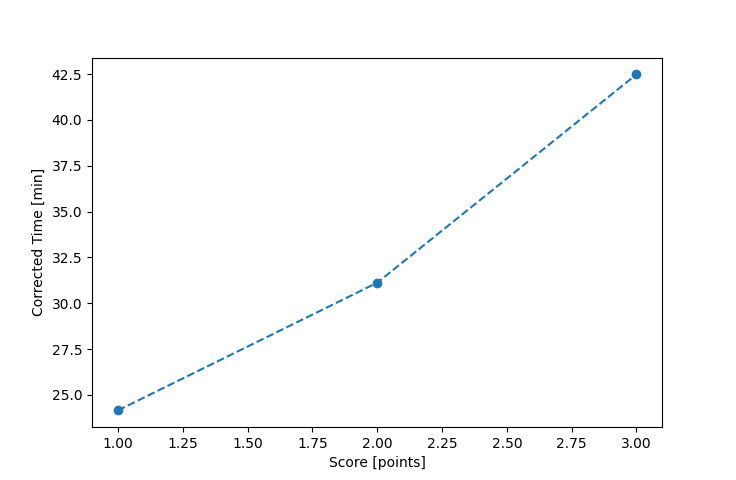

| Wind: | 2-3 (BFT) |
|---|---|
| RC: | Ron_F , Lewis_V |
| Date: | September 16, 2018 |
| Notes: | M2 Starboard |
| Rank / Score | Name | Boat | Input Time [mm:ss] | Input Offset [mm:ss] | Race Time [mm:ss] | Race Time [s] | Handicap | Corrected Time [s] | Corrected Time [mm:ss] |
|---|---|---|---|---|---|---|---|---|---|
| 1.0 | Rod_H | PUF | 26:56 | 00:00 | 26:56 | 1616 | 1.11800 | 1445 | 24:05 |
| 2.0 | Jim_S | SF | 60:00 | 00:00 | 60:00 | 3600 | 1.00400 | 3586 | 59:46 |
| 3.0 | Lisa_M | SF | 60:01 | 00:00 | 60:01 | 3601 | 1.00400 | 3587 | 59:47 |
| 4.0 | Art_M | SWSX | DNF | -- | -- | -- | -- | -- | DNF |

Application Notes:
All race results are unofficial
View source code at https://github.com/cessnao3/portsmouthracecalc/